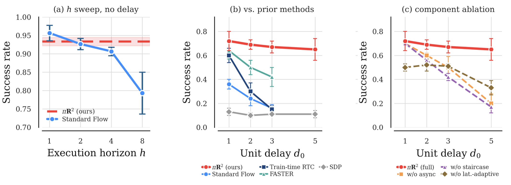

Train-Time RTC
Reactive Real-time Flow Policies
Under review at ICLR 2027
The problem
A modern large-scale flow policy (e.g., VLAs) rests on three ingredients: (1) it predicts actions in chunks, (2) generates each chunk by iterative denoising, and (3) leverages a large backbone (e.g., VLM). These make replanning at every step too expensive, so the policy commits to a chunk and runs it open-loop, blind to the sensory input arriving mid-chunk. Two coupled limitations follow: reduced reactivity, because a chunk plays open-loop while the next is computed, and increased latency, because every action is based on stale observations.
Toggle the demo below to compare one inference loop across Synchronous Inference, Train-Time RTC, and πR². The two modifications behind πR² are detailed in the Method.
d = latency of one denoising step · d_vlm = latency of the VLM forward (both in control steps)
Method
πR² makes two changes to a large-scale flow policy: proprioception-reactive diffusion forcing for reactivity, and a latency-adaptive flow schedule for real-time control. Both leave the backbone untouched, so πR² drops into existing flow policies (e.g., GR00T-N1.7) by fine-tuning, without training from scratch.
Modification 1 · proprioception-reactive diffusion forcing
Standard diffusion denoises the whole chunk at one noise level, tying every action to one stale observation. Diffusion forcing instead gives each position its own noise level, so each denoising step reads a fresher observation. πR² splits this conditioning into two channels:
Fresh proprioception (joint state, torque, fingertip force) at every denoising step.
A slower background loop; a learned delay embedding lets the policy tolerate the lag.
Fresh proprioception conditions every denoising step, while the vision-language feature updates asynchronously and the buffer streams out one action at a time.
Modification 2 · latency-adaptive schedule
Proprioception-reactive diffusion forcing itself is not enough: it assumes the denoising step is instant (delay d = 0), re-planning every control step. Real inference takes d > 0 steps, and d varies with model, GPU, and network, so applying it naively would stall the robot at every step while it waits for the forward pass. πR²'s latency-adaptive schedule absorbs that delay as a staircase with three regions:
The d actions already executing, clamped clean as inpaint conditioning.
The interior ramps clean-to-noise, so one step emits d finished actions.
d fresh-noise slots appended at the back as the buffer slides.
Drag the slider to set the measured delay d. The schedule reshapes so that a single denoising step always emits d clean actions, keeping control real-time at any latency.
This is a diffusion-forcing generalization of Train-Time RTC: both clamp the same clean front of d in-flight actions, but RTC applies a single shared noise level to the rest, while the staircase's ramp and tail let one denoising step emit d clean actions.
Real world · xArm6 + XHand · GR00T-N1.7
πR² tracks smoothly through contact, replanning closed-loop every 1-2 control ticks instead of committing to a long open-loop chunk. All methods fine-tune GR00T-N1.7 (xArm6 + XHand, 25 Hz).
πR² closes on the force spike as the book lands; RTC reacts too late and it slips.
πR² leads on every task, in both success rate and progress.
Next to the human teleoperator who collected the demos, πR² runs continuously and keeps pace, without the chunk-boundary stalls of open-loop baselines.
Simulation
Simulation results on Leap Cube Reorientation at 20 Hz. Switch between the baseline comparison and component ablations.

Limitations
πR² is a first step toward reactive, real-time flow policies, and a few limitations stand out.
Teleoperated demonstrations that are themselves highly reactive are hard to collect, so the data tends to hold only limited reactive recovery behavior.
We condition on proprioception more often than on vision and language. Better conditioning, and richer tactile signals such as tactile images, remain open.
If the early denoising steps plan toward the next subtask, the last denoising step with fresh proprioception may not be able to revert it, so the robot might recover late (see clip).